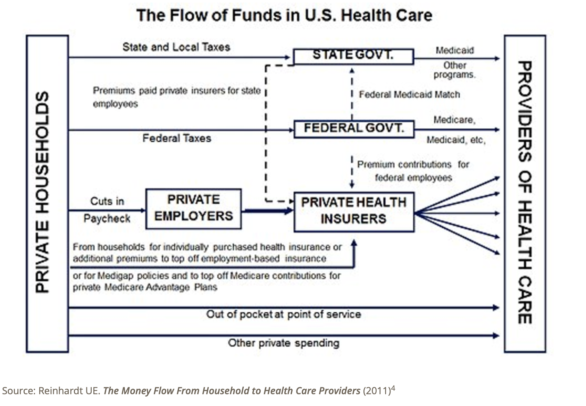

Understanding State Medicaid Programs and Policies
| Term | Description |
|---|---|
| CBO (Community Based Organization) | A non-profit organization that provides services and support to a specific community, often focusing on social and health needs. |
| CHW (Community Health Worker) | A frontline public health professional who serves as a trusted link between healthcare providers and a community, often focusing on outreach and health education. |
| Capitated Payments | A payment model where healthcare providers receive a fixed amount per patient per month, regardless of the number of services provided. |
| Doula | Non-clinically trained professionals who can provide emotional, physical, and informational support and guidance during the prenatal, birth, and postpartum period |
| FQHC (Federally Qualified Health Center) | A community-based health clinic that receives federal funding to provide primary care services in underserved areas. |
| Health Coaches | Professionals who work with individuals to set health goals, develop action plans, and provide guidance on healthy lifestyle choices. |
| MCO (Managed Care Organization) | A type of health insurance company that contracts with healthcare providers to form a network and emphasizes preventative care and cost management. |
| Managed Care | A type of health insurance where the insurer contracts with providers and coordinates care to control costs and improve quality. |
| Medicaid | A government-funded health insurance program for low-income individuals and families. |

| Group | Cost | Number of People | Cost Ratio (Relative to Population) | Weight of Cost to Population |
|---|---|---|---|---|
| Seniors | $122,304,815,900 (21.23%) | 8,527,000 (9.71%) | $14,342.34 | 0.2555 |
| Individuals with Disabilities | $196,614,960,400 (34.09%) | 10,037,600 (11.42%) | $19,571.25 | 0.3491 |
| Adult | $56,884,386,300 (9.87%) | 14,812,200 (16.87%) | $3,838.79 | 0.0683 |
| Children | $100,323,192,200 (17.43%) | 35,361,500 (40.26%) | $2,835.62 | 0.0506 |
| Newly Eligible Adult | $99,956,643,000 (17.36%) | 19,129,700 (21.77%) | $5,224.39 | 0.0933 |
| Total | $576,083,997,800 (100%) | 87,868,000 (100%) | N/A | N/A |
Medicaid managed care should focus on developing predictive models to identify patients who will benefit most from care management and addressing social determinants of health (SDOH) like housing and food. It should invest in both medical and non-medical services for high-cost subgroups, involve consumers in program design to enhance engagement and meet community needs, and implement better predictive models and tailored interventions for super-utilizers. Effective strategies include structured follow-ups, preventive care, multidisciplinary teams, and data analytics. Integrated care approaches, such as those demonstrated by programs like CareMore, should be adopted to improve outcomes and cost-effectiveness by addressing social needs.
| Resource | Description |
|---|---|
| Active Redesign of a Medicaid Care Management Strategy for Greater Return on Investment: Predicting Impactability | Care management of high-cost/high-needs patients is an increasingly common strategy to reduce health care costs. A variety of targeting methodologies have emerged to identify patients with high historical or predicted health care utilization, but the more pertinent question for program planners is how to identify those who are most likely to benefit from care management intervention. This paper describes the evolution of complex care management targeting strategies in Community Care of North Carolina’s (CCNC) work with the statewide non-dual Medicaid population, culminating in the development of an ‘‘Impactability Score’’ that uses administrative data to predict achievable savings. |
| Addressing Social Drivers Of Health In The Medicaid Managed Care Environment |
This article explores how Medicaid managed care programs can better address social factors that influence health outcomes. It argues that collaboration between Medicaid managed care organizations and community-based organizations is essential to meet patients' social needs. Key Points
|
| Dispelling The Myths Hindering Medicaid Innovation |
Discusses the misconception that Medicaid has no money for innovation. In reality, Medicaid plans have incentives to invest in medical and non-medical services. Key Points
|
| Engaging Consumers in Medicaid Program Design: Strategies from the States |
This paper examines how Medicaid agencies in 14 states engage consumers in program design, emphasizing common facilitators like leadership commitment and flexible recruitment strategies, and advocates for sharing best practices to improve engagement and address community needs. Key Points
|
| For Many Patients Who Use Large Amounts Of Health Care Services, The Need Is Intense Yet Temporary |
This paper analyzed 4,774 super-utilizers in an urban safety-net system, finding that only 3% of adult patients accounted for 30% of charges, with fewer than half remaining super-utilizers after seven months, highlighting the need for improved predictive models and tailored interventions. Key Points
|
| How to Improve Care for High-Need, High-Cost Medicaid Patients |
This article provides insights into cost-effective ways to serve patients who have complex health problems and social needs. Key Points
|
| Managing Cost of Care: Lessons from Successful Organizations |
The article outlines successful strategies used by healthcare organizations to manage cost of care, including leadership, cultural alignment, primary care based models, and organizationally based models. Key PointsPrimary Care Based Models:
Organizationally Based Models:
|
| Reframing Value-Based Care Management Beyond Cost Reduction and Toward Patient Centerednesse |
The article describes a care management program implemented by Mass General Brigham, a large healthcare system. The program uses a multidimensional approach to assess patients’ needs and match them to the most appropriate care program. The goal is to provide the right care to the right patient at the right time. Key Points
|
| Rethinking How Medicaid Patients Receive Care |
The CareMore model has generated promising results in Memphis and Des Moines, and it is now expanding to other locations. This model includes comprehensive, relationship-based primary care, collaborative behavioral health, community and patient engagement focused on social needs, and the breakdown of silos between inpatient care and the community. Key Points
|
The current Medicaid policy landscape is marked by significant changes and challenges. Key areas include:
| Resource | Description |
|---|---|
| MACPAC Policy Topics | Comprehensive resource on Medicaid and CHIP policy issues from the Medicaid and CHIP Payment and Access Commission. |
| KFF Medicaid | Latest research, analysis and data on Medicaid policy developments and challenges. |
| Resource | Description |
|---|---|
| How Does Use of Medicaid Wraparound Services by Dual-Eligible Individuals Vary by Service, State, and Enrollees' Demographics? |
The article reports that the use of Medicaid wraparound services varies by state and enrollee demographics. Key Points
|
| Resource | Description |
|---|---|
| Growing Pains as California Adds Social Services to Medicaid |
Key Points
|
| Medicaid Waiver Tracker: Approved and Pending Section 1115 Waivers by State | This page tracks approved and pending Section 1115 Medicaid demonstration waivers, which offer states an avenue to test new approaches in Medicaid that differ from what is required by federal statute. |
Social care in Medicaid faces significant challenges, notably in securing sustainable funding for community health worker (CHW) programs. Discussions underscore the necessity of higher Medicaid funding to support these initiatives effectively. Regulatory complexities present barriers to implementing social care programs, leading to uncertainty and potential non-compliance among health plans. Clearer guidance from policymakers is advocated to mitigate these challenges and encourage the integration of social care services within Medicaid frameworks.
| Resource | Description |
|---|---|
| Community As Medicine | Elizabeth Markle | Dr. Elizabeth Markle asks: Do your experiences with healthcare leave you feeling uplifted, honored, empowered, and connected? For many of us, our struggles to be physically and mentally healthy can feel like an endless, impossible climb: we feel shame, isolation, and overwhelm. Community As Medicine offers both a bold possibility for transformation of healthcare systems and an immediate strategy for caring for ourselves and our loved ones. |
FQHCs and Community Health Centers are vital components of the healthcare safety net, providing care to vulnerable populations regardless of their ability to pay. They face unique challenges in funding and reimbursement while working to integrate value-based care models and address social determinants of health.
| Resource | Description |
|---|---|
| Community Health Centers and Value-Based Payments |
Key Points
|
| Economic Impact of Community Health Centers | Analysis of the economic contributions and cost-efficiency of Community Health Centers across the United States |
| Improving Health Through Community Care Hubs |
Key Points
|
| Resource | Description |
|---|---|
| 2023 Annual Medicaid MCO Survey | Comprehensive survey examining Medicaid managed care organizations across aspects like high-risk care coordination, alternative payment models, pharmacy, and behavioral health. |
| Cityblock Health | An in-depth analysis of Cityblock's innovative approach to providing healthcare for complex populations. |
| Revolutionizing Medicaid Care Through Digital Health |
Key Points
|
| Fund | Focus Areas |
|---|---|
| Town Hall Ventures | Healthcare innovation focused on underserved populations |
| Laerdal Million Lives Fund | Impact-focused healthcare investments |
| Rock Health | Digital health ventures including Medicaid-focused solutions |
| Resource | Description |
|---|---|
| Lessons from Founding a Health Equity Startup | Jessica discusses the challenges of finding product-market fit in healthcare, providing valuable insights for new founders. |
Social Care Resources
Key Points
Key Points